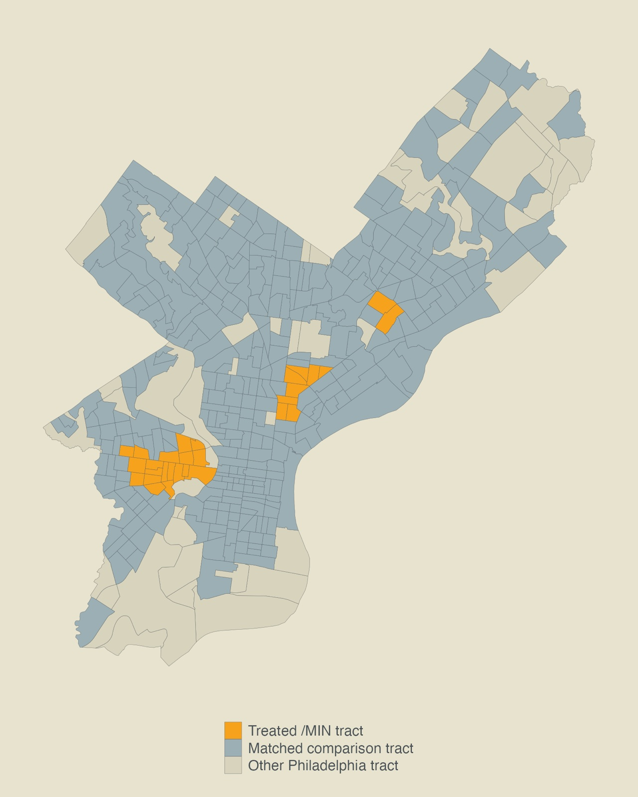

Fels Capstone · City of Philadelphia, Division of Development Services · 2026
The Mixed Income Neighborhoods Overlay and Residential Development in Philadelphia
Philadelphia's MIN overlay requires residential projects of 10 or more units to set aside 20% of units as affordable at 40% of area median income. Developers warned it would stall construction. Raw trends seemed to agree: permits fell inside the overlay, and the share of projects just under the 10-unit threshold roughly doubled.
After comparing MIN census tracts to matched tracts with similar income, tenure, vacancy, and pre-policy permitting, the effects on permit volume, project size, and threshold avoidance were statistically indistinguishable from zero. The slowdown fits citywide forces better, including the 2021 tax-abatement redesign and higher financing costs after 2022. The report recommends keeping the overlay as designed and re-evaluating it as more data accumulates.
